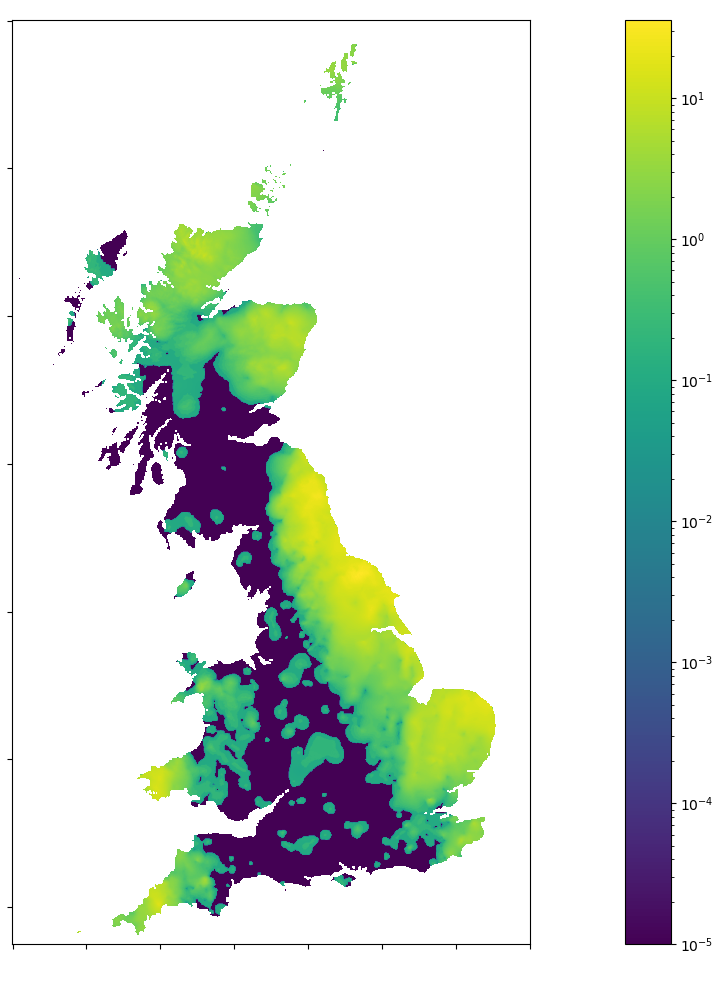
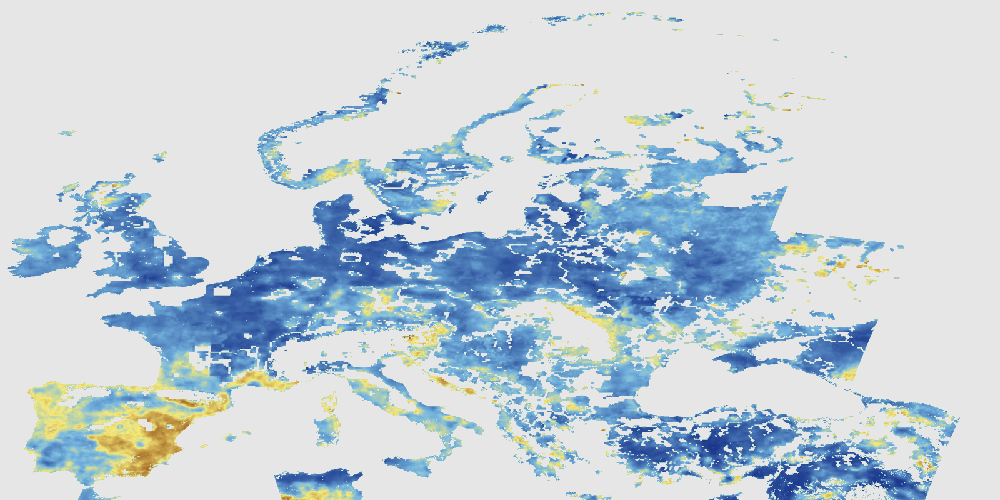
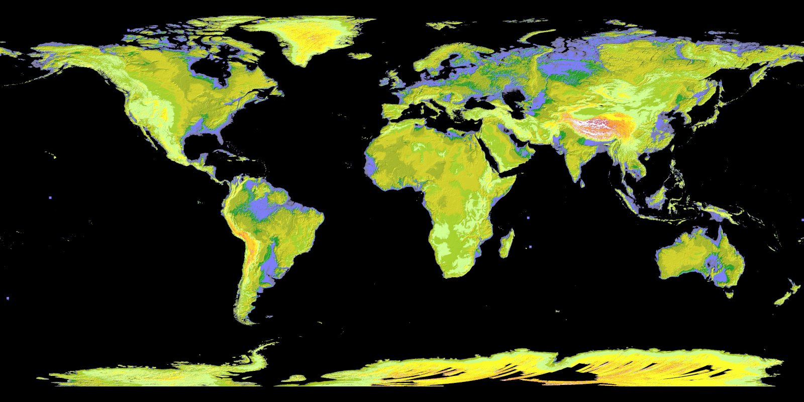
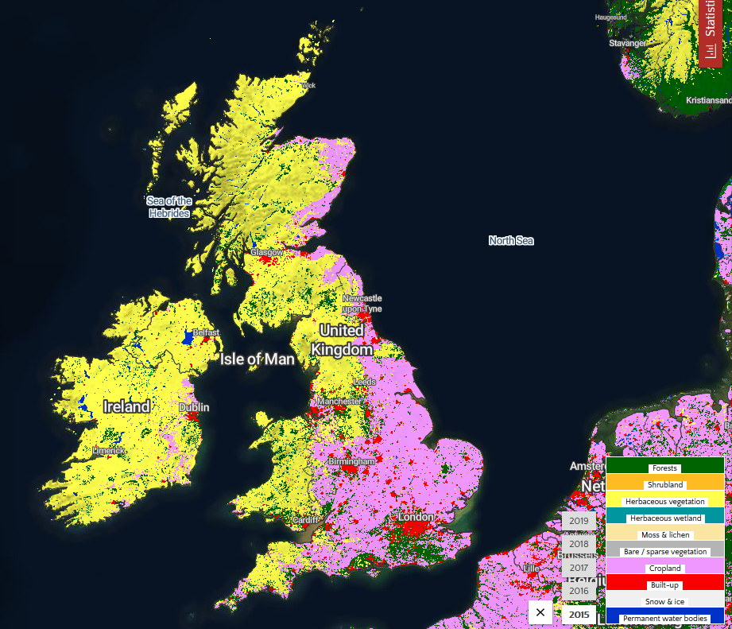
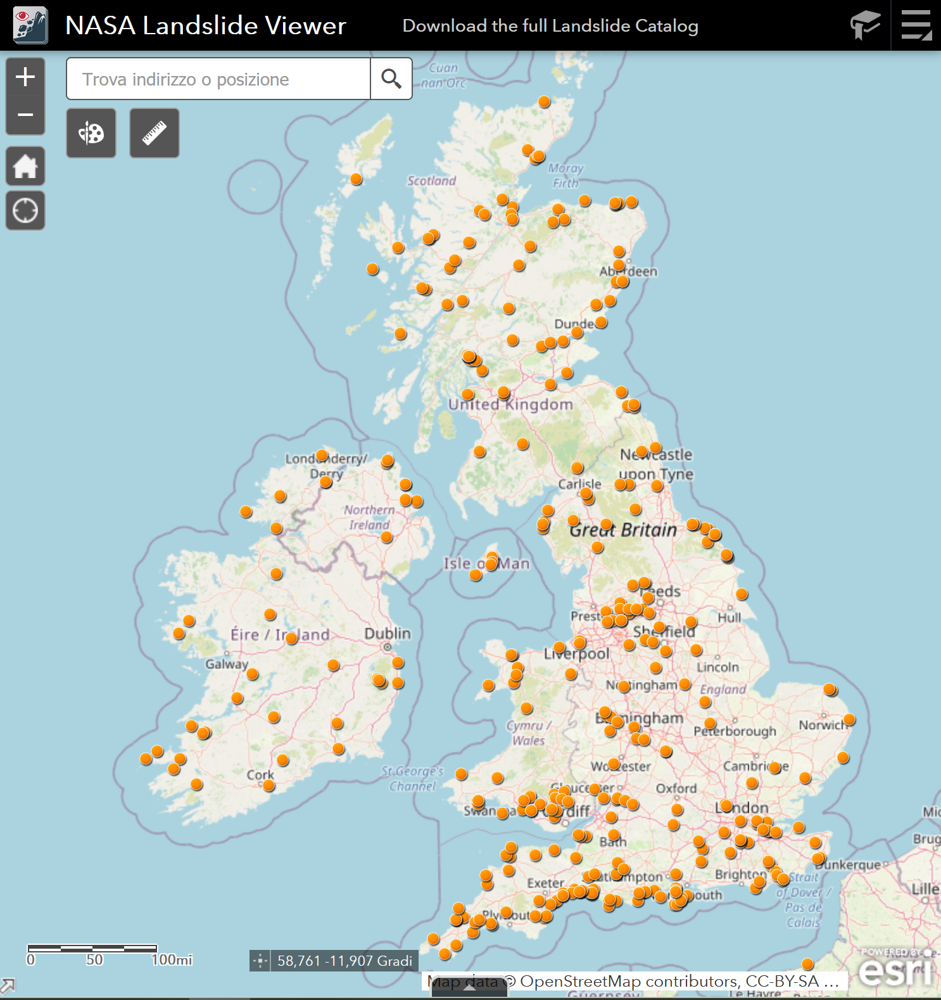
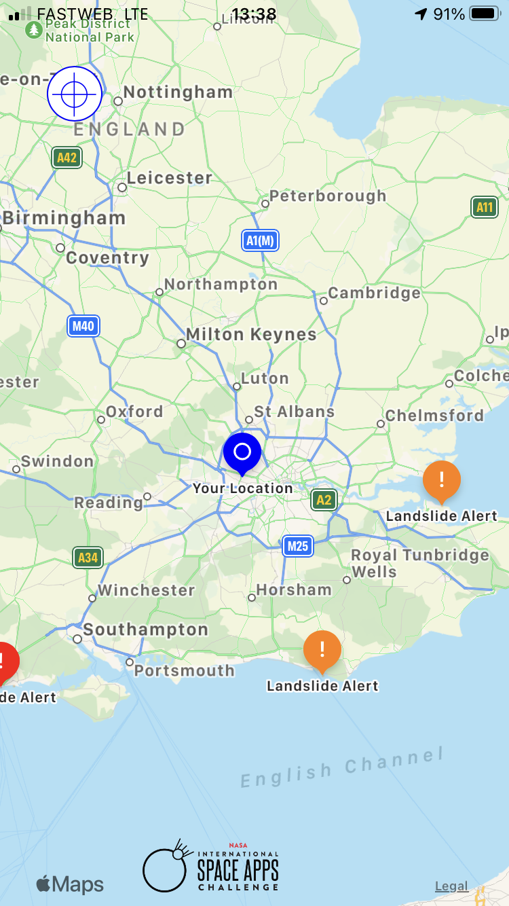
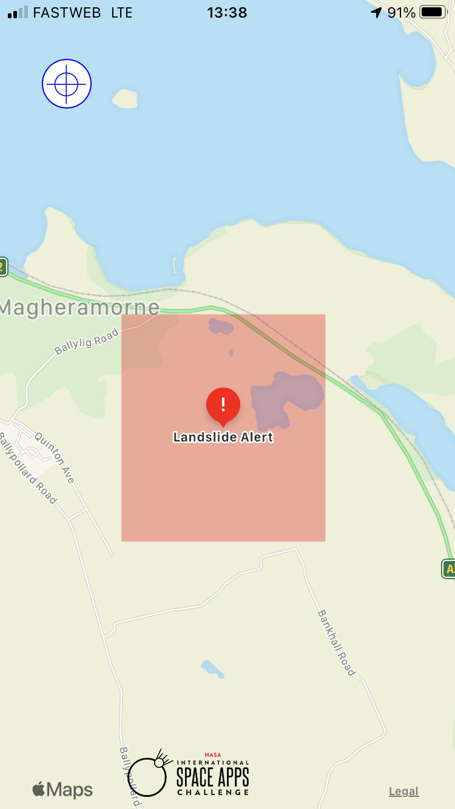
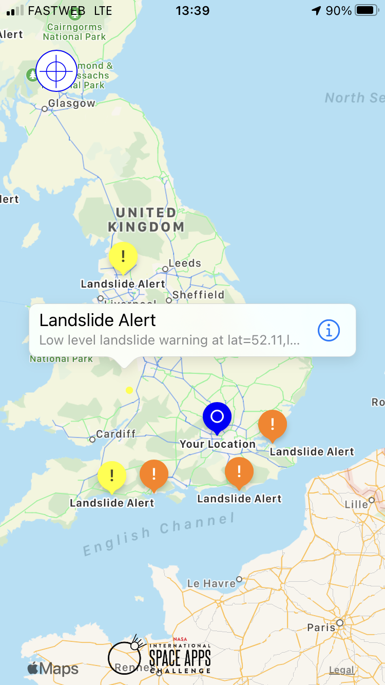

Landslide Tracker for the UK
TRIESTE | TEAM CARSO
Identifying risk with science + communities
LANDSLIDES
Ground movements due to changes in slope stability.
Among the main causes:
- saturation by rain water infiltration
- increase in hydrostatic pressure
- loss/absence of vegetation
- earthquakes
INPUT DATA
- precipitation data
 - water content index data

- elevation and slope data
 - landcover type data

STUDIED EVENTS
MACHINE LEARNING MODEL
Simple neural network with a total of 87 trainable parameters
VISUALIZE THE RESULTS


